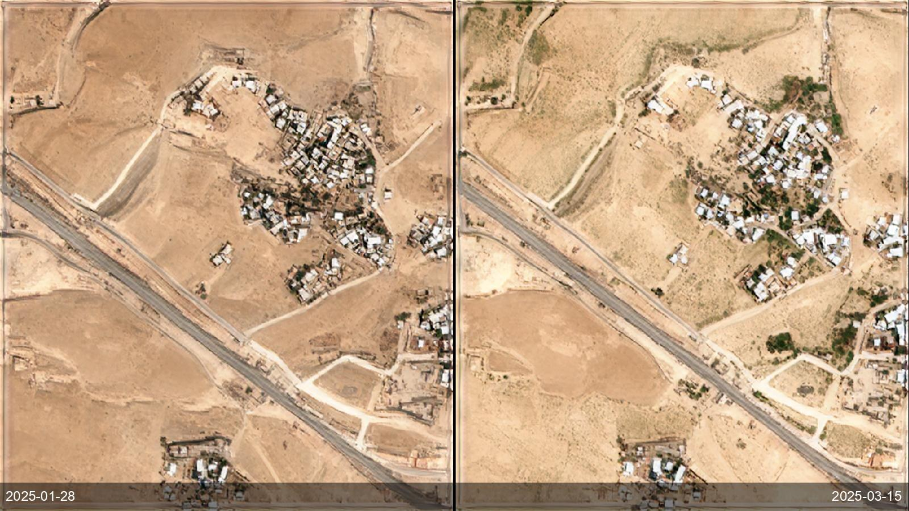
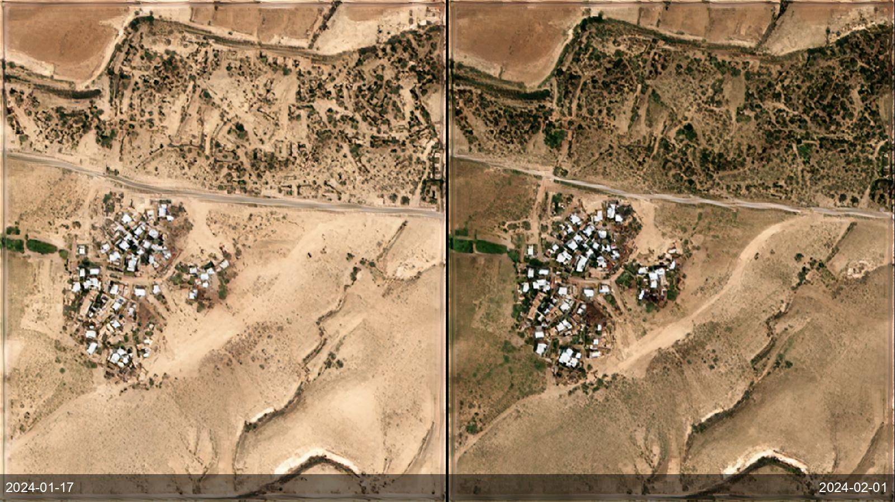
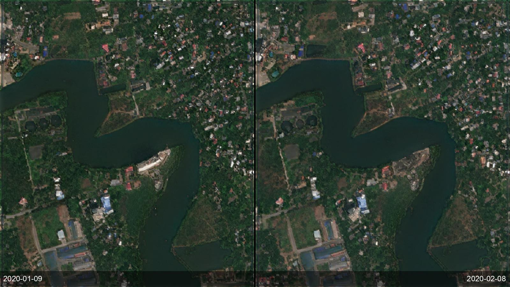

A planning authority, land registry or tax office has to find building that happens without a permit — small, dispersed and constant — across a whole jurisdiction it can never drive or fly in full. By the time a structure is reported it is already built, and manual image review doesn't scale. SkySpera classifies land cover on two dates and applies a three-stage filter (asymmetric strictness, spectral confirmation, minimum component size) to flag pixels that are unambiguously built now but were not months ago, on 5 m super-resolution across areas up to 100,000 km², with per-site before/after report views over an OpenStreetMap reference. It turns "we can't watch everywhere" into a routine annual sweep — enforcement, tax verification and registry updates prioritised by evidence, over imagery with accommodating licensing. The automated detection product is in development; today SkySpera delivers the frequent 1 m visual and land-cover reads it runs on.


Tell us the ground you need to watch — we'll show you what SkySpera can do with it.
Talk to us